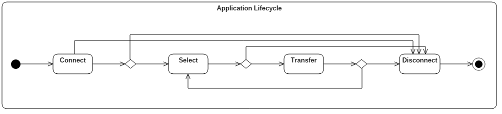
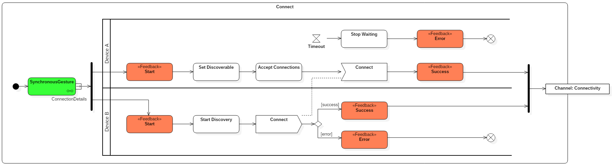
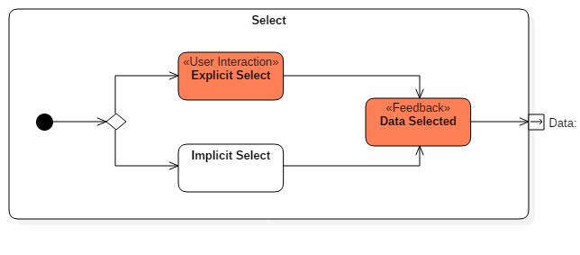
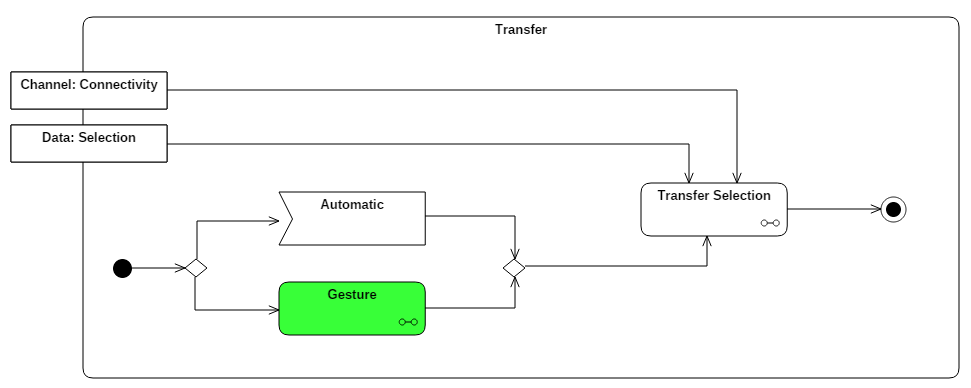
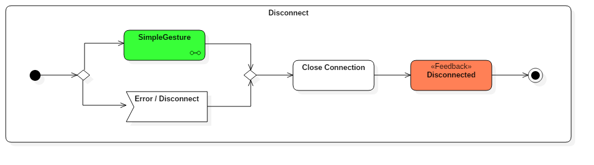

Das Ziel einer Multiscreen-Interaktion ist die intuitive, gestenbasierte Interaktion zweier Geräte zwecks Verbindungsaufbau, Dateiübertragung, Bildschirmerweiterung oder Verbindungsabbau. Das Kapitel "Technisches" in den einzelnen Pattern-Beschreibungen enthält Pattern-spezifische Hinweise zur Implementierung der jeweiligen Gestenerkennung. Diese Hinweise müssen im Kontext einer Multiscreen-Applikation umgesetzt werden, dessen Aufbau nachfolgend modellhaft nach [Schneider 2015] beschrieben wird.
Jede Instanz einer Multiscreen-Applikation kann sich in verschiedenen Zuständen befinden, wobei es aus Sicht von Multiscreen-Interaktionen vier relevante Zustandsänderungen (Lifecycle-Events) gibt, die durch Gesten ausgelöst werden können:
Die folgende Grafik veranschaulicht die möglichen Zustandsänderungen und deren Zusammenspiel für den Lebenszyklus einer Multiscreen-Applikation.
Das Lifecycle-Event Connect kann durch eine synchrone Geste ausgelöst werden. Synchrone Gesten unterscheiden sich von einfachen Gesten dadurch, dass an der Gesten-Erkennung zwei Geräte simultan beteiligt sind. Ein Beispiel ist das Zusammenstoßen zweier Geräte zwecks Verbindungsaufbau (Pattern "Bump To Connect"). Die folgende Grafik veranschaulicht den Ablauf des Connect-Events aus Implementierungssicht:
Im Abschnitt "Technisches" einer Pattern-Beschreibung befinden sich jeweils die Implementierungsdetails für die synchrone Geste (grüne Markierung). Sämtliche Gesten, die für einen Connect in Frage kommen, befinden sich in der Kategorie Connect. Allgemeine Informationen zur Gestaltung des Feedbacks einer Interaktion (rote Markierungen) finden sich auf der Designerseite, konkrete Gestaltungshinweise jeweils im Abschnitt "Wie" der Pattern-Beschreibungen.
Nachdem eine Verbindung hergestellt wurde, müssen Daten ausgewählt werden, die zwischen den Geräten übertragen werden sollen. Im Lifecycle-Event Select gibt es zwei Möglichkeiten die Daten zu selektieren:
Die folgende Grafik veranschaulicht den Ablauf des Select-Events:
Nachdem die Verbindung aufgebaut und zu übermittelnde Daten ausgewählt wurden, kann durch einfache oder synchrone Gesten ein Transfer der Daten durchgeführt werden; je nach Kontext kann der Transfer auch automatisch ausgelöst werden. Die folgende Grafik veranschaulicht den Ablauf des Lifecycle-Events Transfer:
Der Transfer kann verschiedenen Ausprägungen haben, was durch Pattern verschiedener Kategorien abgedeckt wird:
Die Abschlussarbeiten [Madden 2015], [Grab 2015], [Burjan 2015] und [Hahn 2015] behandeln verschiedene Implementierungsansätze zum Transfer im Detail.
Der Verbindungsabbau (Disconnect) kann durch eine einfache oder synchrone Geste initiiert werden. Pattern dazu finden sich in der Kategorie Connect. Die folgende Grafik veranschaulicht den Ablauf des Lifecycle-Events Disconnect:
Die Codebasis des Gestenframeworks samt Android-Beispielimplementierung findet sich unter: Github
[Schneider 2015] Schneider, Horst: Ein formales Modell zur Beschreibung geräteübergreifender Interaktionsmuster, Hochschule Mannheim, Masterthesis, 2015 (pdf)
[Madden 2015] Madden, Dominick: Stitch-to-Tile: Eine Gestensteuerung zur Auslösung von Bildschirmerweiterung, Hochschule Mannheim, Bachelorthesis, 2015 (pdf)
[Burjan 2015] Burjan, Valentina: Prototypische Implementierung des Blended Interaction Patterns „grab the screen“, Hochschule Mannheim, Bachelorthesis, 2015 (pdf)
[Hahn 2015] Hahn, Alexander: Konzeption und Implementierung der Swipe-Geste zum Datentransfer im Multi-Screen Kontext, Hochschule Mannheim, Bachelorthesis, 2015 (pdf)
[Grab 2015] Grab, Benjamin: Implementierung einer gestenbasierten Interaktion zum Datenaustausch zwischen mobilen Endgeräten, Hochschule Mannheim, Bachelorthesis, 2015 (pdf)